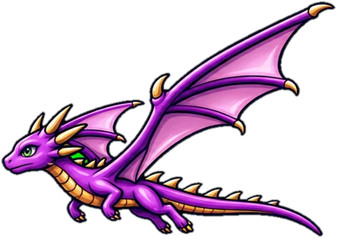

 Wind
WindTap a stage to read its story.
Drakynch is a vivid purple bat-winged lizard with membranous wings nearly as large as its body and four compact legs that tuck neatly when gliding. Its wing membranes show the first hints of gold-orange at the edges, and its long tail streams behind like a rudder. Born near the Lava Crater's thermal columns, it learned to glide before it learned to walk, and it navigates entirely by air rather than by ground. It sleeps hanging from the crater wall, wings folded like a closed umbrella, dreaming of updrafts.
Field note: Drakynch has never been documented touching flat ground for more than thirty seconds; it always returns to a hanging position.
Lava Crater. Drakynch and its family are found in the Lava Crater. See everyone who lives there.
Share a Bond Food that matches its types to become friends. Drakynch loves:
A Bond Food is not a trick. It joins your spirit with the Kimuro's spirit, and only when it chooses you.
Print the Kimuro adventure packs: mazes, cards, a board game and Bond Mark medals.
See the printable packs